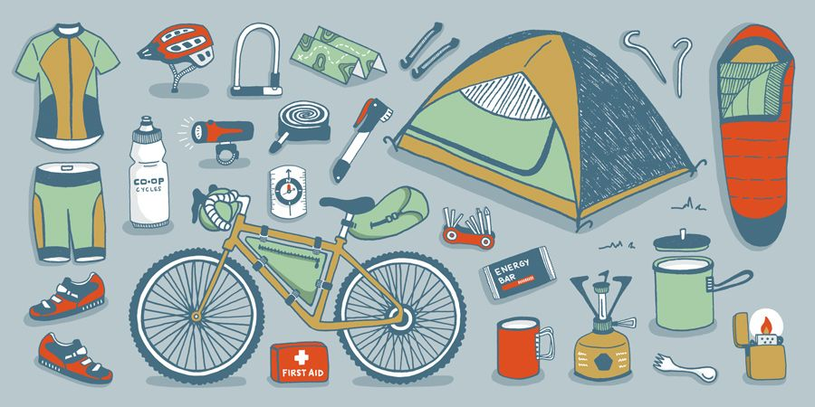
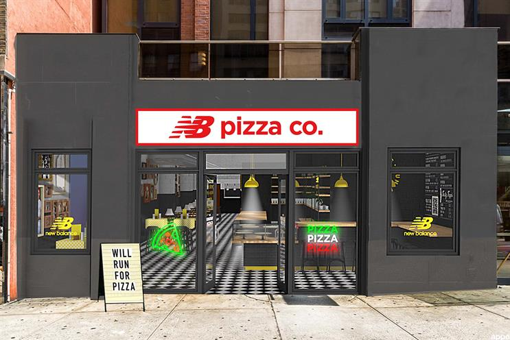
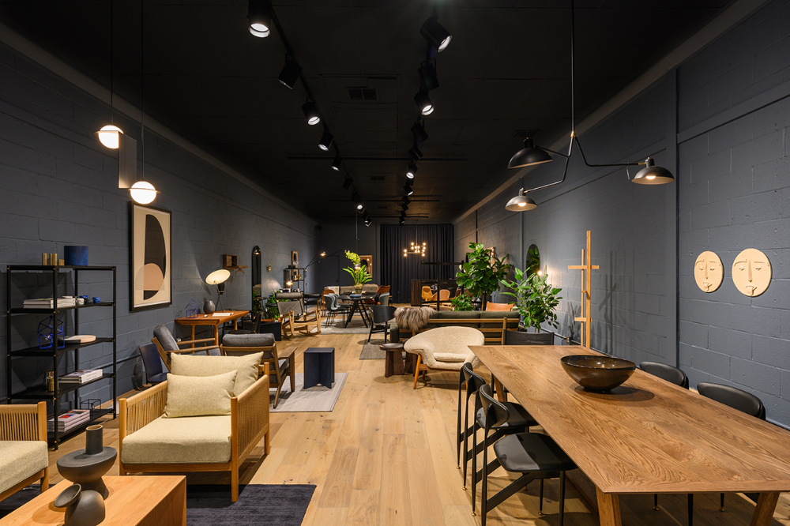
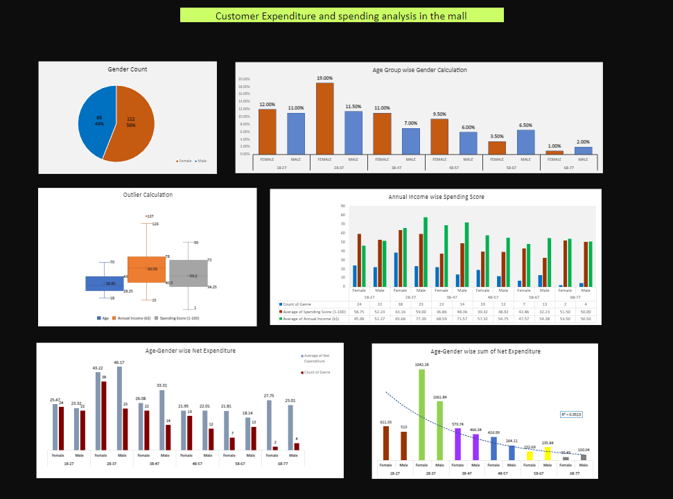

WELCOME TO MY PROJECT PORTFOLIO
I have a pride in my diverse range of projects that showcase my expertise, creativity, and commitment to excellence. With a passion for innovation and a dedication to delivering exceptional results,I have successfully completed numerous projects across various industries. my portfolio demonstrates my ability to meet client requirements, exceed expectations, and create impactful solutions.
OBJECTIVE:- Designed and deployed an RAG-based AI chatbot using LangChain, OpenAI, and vector databases to enhance response relevance and optimize analytics and reporting workflows across teams.
DATASET:- Integrated Web and Research Agents with LangGraph; used ChromaDB with pre-trained embeddings and top-k semantic search for retrieval.
CONCLUSION:- Automated workflows for accurate, personalized tax calculations, reducing manual effort and ensuring compliance with Indian tax laws
Investment Banking Product Customer Prediction Analysis
OBJECTIVE: The project is used to analyze customer behavior and anticipate their likelihood of purchasing investment products offered by a bank.
DATASET: Developed a supervised classification model with 41,100 customers, utilized with 21 variables.
CONCLUSION: Achieved an accuracy of 76% in anticipating customers who purchased the investment product. Target score was 46%.
ABOUT:- This project involves the analysis of sales data for Adventure Work Products using Microsoft Power BI.
The goal is to create a dashboard that provides insights into the sales performance of different product categories and subcategories ,
across various countries, including the UK, US, Germany, Australia, France, and Canada.

Dashboard Overview :-
The dashboard presents a comprehensive view of the sales analysis,
allowing users to understand the performance of the main categories: accessories,
bikes, and clothing. Additionally, it provides insights into the sales of their respective subcategories.
OBJECTIVE: Utilize SQL to analyze the Pizza Runner data from tables including "Runners," "Customers," "Orders," "Runner Orders," "Pizza Names," "Pizza Recipes," and "Pizza Toppings" insights into operations, customer behavior, and optimize pizza delivery process.

This project is used to perform a relational operations using multiple tables like "Runners," "Customers," "Orders," "Runner Orders," "Pizza Names," "Pizza Recipes," and "Pizza Toppings"from pizza runner database to perform sql operations for gathering important information.

CONCLUSION:- Discover the seasonal pattern in furniture sales in the supermarket, with low sales in the early part of the year
and a linear increase over time
OBJECTIVE:- The model is used to predict whether news stories are fake or not using NLP.
DATASET :- The model was trained on 20,800 data points, utilizing 5 variables. The approach employs natural
language processing techniques to determine the veracity of news articles
CONCLUSION:- We create reliable and efficient system for detecting fake news, helping to
combat the spread of misinformation with 98% f1 score accuracy .
OBJECTIVE: How can we determine the target customer range on which we
should focus our spending in order to maximize profits?
Conducted customer analysis to identify target segments for
maximizing profits, focusing on age-wise gender distribution, outlier
detection, and correlation analysis of income, and spending scores
